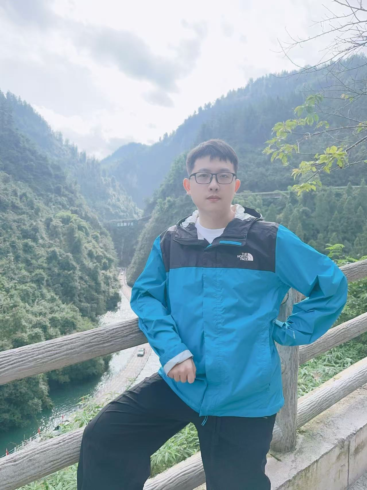

|
Xianliang Huang
I am a physics-grounded 3D world model Algorithm Researcher at ByteDance, working on
neural rendering, physical inverse problems, large-scale scene reconstruction and 3D scene generation. I received my Ph.D. in
Electronic Information from the
School of Computer Science and Technology,
Fudan University
in 2025, advised by
Prof. Shuigeng Zhou.
My research interests include computer vision, neural rendering,
multimodal learning, and visual geometry foundation models for
3D human, object, and scene generation, editing, and reconstruction.
My recent work covers digital humans, multi-view face generation,
dynamic object removal, diffusion-guided editing, NeRF, 3D Gaussian
Splatting, and 4D Gaussian Splatting.
Email /
CV /
Google Scholar /
GitHub /
New Homepage
|

|
Research
I study 3D vision systems for reconstructing, generating, editing,
and understanding complex humans, objects, and scenes. My current
focus is on end-to-end visual geometry models, large-scale fisheye
reconstruction, feed-forward 3D Gaussian Splatting mapping and
localization, and long-sequence offline and incremental reconstruction.
|
NeRF-MIR: Toward High-Quality Restoration of Masked Images With Neural Radiance Fields
Xianliang Huang, Zhizhou Zhong, Shuhang Chen, Yi Xu, Jihong Guan, Shuigeng Zhou
IEEE Transactions on Neural Networks and Learning Systems, 2026
project page
/
paper
|
IDDR-NGP: Incorporating Detectors for Distractor Removal with Instant Neural Radiance Field
Xianliang Huang, Jiajie Gou, Shuhang Chen, Zhizhou Zhong, Jihong Guan, Shuigeng Zhou
ACM Multimedia, Oral, CCF-A
project page
/
paper
Detector-guided distractor removal with Instant Neural Radiance Fields.
|
A Focused Human Body Model for Accurate Anthropometric Measurements Extraction
Shuhang Chen*, Xianliang Huang*, Zhizhou Zhong, Juhong Guan, Shuigeng Zhou
CVPR, 2025, CCF-A
project page
/
paper
|
Semantic-Guided Progressive Object Removal with Gaussian Splatting
Xianliang Huang, Chen Xiao, Yuanxiang Ni, Guanming Liu, Mingkai Liu, Dikai Fan, Xiao Liu, Hao Zhang
IEEE International Conference on Robotics and Automation (ICRA), CCF-B
|
MACE: Mixture-of-Experts Accelerated Coordinate Encoding for Large-Scale Scene Localization and Rendering
Mingkai Liu, Dikai Fan, Haohua Que, Haojia Gao, Xiao Liu, Shuxue Peng, Meixia Lin, Shengyu Gu, Ruicong Ye, Wanli Qiu, Handong Yao, Ruopeng Zhang, Xianliang Huang*
IEEE International Conference on Robotics and Automation (ICRA), CCF-B
|
DR-Net: A Multi-View Face Synthesis Network Driven by Dual Representation
Xianliang Huang, Yining Lang, Ying Guo, Yuan He, Hui Xue, Li Zhao, Shuigeng Zhou
IEEE International Conference on Multimedia and Expo (ICME), 2023, Oral, CCF-B
paper
A multi-view face synthesis method based on dual representation.
|
Hi-NeRF: Hybridizing 2D Inpainting with Neural Radiance Fields for 3D Scene Inpainting
Xianliang Huang, Shuhang Chen, Zhizhou Zhong, Jiajie Gou, Jihong Guan, Shuigeng Zhou
ACCV, 2024, CCF-C
project page
/
paper
|
Hybrid Electromagnetic Inversion of 3-D Irregular Scatterers Embedded in Layered Media by VBIM and MET
Xianliang Huang, Jiawen Li, Yanjin Chen, Feng Han, Qinghuo Liu
IEEE Transactions on Antennas and Propagation, JCR-Q1
project page
/
paper
|
Fast and Reliable Reconstruction of 3-D Anisotropic Objects Buried in Layered Media by Cascaded Inverse Solvers
Xianliang Huang, Jiawen Li, Jianliang Zhuo, Feng Han, Qinghuo Liu
IEEE Geoscience and Remote Sensing Letters, JCR-Q2
paper
|
A Cascade 3D Inpainting Scheme Combined Multi-view Diffusion Prior with Gaussian Splatting
Xianliang Huang, Chen Xiao, Shuhang Chen, Jiajie Gou, Jihong Guan, Shuigeng Zhou
IEEE Transactions on Cybernetics, under review
|
FiSh3R: Visual Geometry Transformer for Distortion-Aware Fisheye Reconstruction
Xianliang Huang, Chen Xiao, Mingkai Liu, Jingke Zhou, Dikai Fan, Yuewen Ma, Xiao Liu, Shuigeng Zhou
CVPR, 2026, under review
|
Think Locally, Refine Globally for Memory-Efficient Streaming 3D Reconstruction
Jingke Zhou, Chenhang Ma, Zhizhou Zhong, Mingkai Liu, Zhuang Zhou, Yichan Ji, Yaoyuan Zhang, Dikai Fan, Binghua Su, Bo Cai, Xianliang Huang*
ICML, 2026, under review
|
Separable Policy Learning for Emergency Vehicle Prioritized Traffic Signal Control
Qize Jiang, Xianliang Huang, Hao Zhang, Weiwei Sun
ICML, 2026, under review
|
SSOR-GS: Seamless Small Objects Removal via 3D Gaussian Splatting
Xianliang Huang, Jiajie Gou, Mingkai Liu, Qize Jiang, Dikai Fan, Yuewen Ma, Xiao Liu, Hao Zhang
ICME, 2026, under review
|
LLMs Powers Controllable Distractor Generation and Removal with Gaussian Splatting
Xianliang Huang*, Chen Xiao*, Jiajie Gou, Yixin Ren, Jihong Guan, Shuigeng Zhou
ICASSP, 2026, under review
|
Gaussian Eraser: Seamless 3D Scene Inpainting via Region Score Distillation
Jingke Zhou, Chenhang Ma, Mingkai Liu, Ruihan Hou, Weichen Zhan, Xianliang Huang*
ICME, 2026, under review
|
CoGeo-GS: Concept-Driven and Geometry-Aware Multi-Object Removal in 3D Scenes
Yuanxiang Ni, Xianliang Huang, Chenhang Ma, Chen Xiao, Yuewen Ma, Ruxin Wang, Hao Zhang
ICME, 2026, under review
|
ACEsplat: Fast Per-Scene 3D Gaussian Reconstruction from RGB Images and Poses
Mingkai Liu, Haohua Que, Dikai Fan, Xianliang Huang, Haojia Gao, Handong Yao, Shuxue Peng, Meixia Lin, Feng Shuo, Fei Qiao
ICME, 2026, under review
|
A Proxy Agent for Context-Aware Intent Understanding via Retrieval-conditioned Inference
Guanming Liu, Meng Wu, Peng Zhang, Yu Zhang, Yubo Shu, Xianliang Huang, Ning Gu, Liuxin Zhang, Qianying Wang, Tun Lu
ACM Transactions on Information Systems, under review
|
Awards
- Outstanding Graduate of Fudan University
- Outstanding Student of Fudan University
- First Class Scholarship for Doctoral Students at Fudan University
- Three-A Student of Xiamen University
- Outstanding Student Leader at the School of Electronics, Xiamen University
- Provincial Second Prize and First Prize in the 8th and 9th National Chinese University Student Mathematics Competitions
- Second Prize in the APMCM Asia-Pacific Mathematical Contest in Modeling
|
Projects
- Participated in national key R&D projects on fast multi-parameter electromagnetic scattering computation for airborne composite field sources
- Participated in national key R&D projects on joint electromagnetic inversion and imaging
- Participated in a Hikvision collaborative project on large-scale high-potential data annotation and vector-scalar coordination
- Participated in a human-body measurement project based on reconstructed body meshes and human foundation models
|
Experience
- World Model Algorithm Researcher, ByteDance, 2025.07-present
- Large Model Algorithm Research Intern, Casco Signal, 2025.03-2025.06
- Algorithm Intern, Hikvision, 2024.03-2024.09
- Algorithm Researcher, Beijing DeepSun Technology Co., 2021.06-2021.09
|
Website maintained by Xianliang Huang.
|
|
{kind=link}